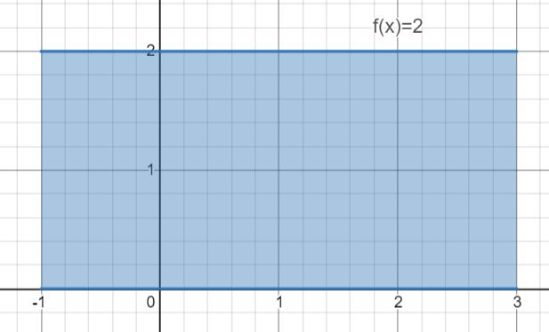
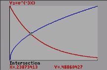

Topic: Area between 2 Curves.
or

From middle school math we can see that the area (b*h) of this rectangle is 8.
From Calculus we know that we can find the area using the definite integral:
= 8 as well.
What may not be as obvious is what happens when we translate the rectangle.
Obviously the area is still 8, but:
So what are we missing? It turns out that ALL integrals are actually of the form:
However, because g(x) has been the x axis for every integral up until now, we have just ignored it.
So looking at this graph we have
.
General Process:

- Find your bounds. Set
f(x)=g(x) and find all point(s) of intersection.
In the example on the right we can see that the bounds are [-2,2].
If you did not have a graph you would solvef(x)=g(x) algebraically. - Determine which equation is bigger (on top)
(If you have multiple intervals the equations may swap)
In the example at right g(x) is bigger so our integral is - Integrating we get (
x3+3x ) − (x3−2x )
Combining like termsx3+5
Evaluating over the domain [-2,2]: u2.
Your Turn:
Problem 1:

2003 AP© Calculus AB. Problem # 1.
Let R be the shaded region bounded by the graphs of
Find the area of R. (You may use a calculator. )
|
Step 1 () |
Let (   |
|
|
Step 2 () |
The integral is f(x) - g(x) because f(x) > g(x) on [A,0]. |
|
| Score: |
Problem 2:

2015 AP© Calculus AB. Problem # 2.
Let f and g be the functions defined by
Let R and S be the two regions enclosed by the graphs of f and g shown in the figure at left.
Find the sum of the areas of regions R and S
(You may use a calculator. )
|
Step 1 () |
Let (   |
|
|
Step 2 () |
The integral is g(x) - f(x) because g(x) > f(x) on [0,a]. |
|
|
Step 3 () |
The integral is f(x) - g(x) because f(x) > g(x) on [A,2]. |
|
| Answer |
Total Area:
|
|
| Score: |
Lesson Continued: What do you do when f(x) and g(x) have different domains?
Notice that f(x) and g(x) exist on different domains. f(x) exists on [-1,0] and g(x) exists on [0,1]. Therefore it is not possible to
Option 1: Break the problem into two pieces. +
This option will usually work on the AP test and is a valid strategy.
 Option 2: Solve each equation for x and integrate with respect to "y".
Option 2: Solve each equation for x and integrate with respect to "y". (This may seem more difficult but its an important AP skill and its how we are going to solve this problem.)
Process:
- Solve each equation for "x".
y = (x + 1)2 becomesx = ± − 1
y = (x − 1)2 becomesx = ± + 1 -
Instead of you are going to (Notice the bounds have changed)
-
Let:
(A,B) = (0,1)
q(y) = − 1
r(y) = − + 1 (− because of domain for g(x))
= [(y3/2 + y) − (y3/2 − y)] = u2
Problem 3:
2012 AP© Calculus AB. Problem # 2.
Let f and g be the functions defined by
Notice that you could integrate with respect to "x" by breaking the problem into two parts(since f(x) and g(x) only exist on separate domains. +
However you are going to solve it by integrating with respect to "y".
(Don't forget to )
|
Step 1 () |
Let ( |
|
|
Step 2 () |
Let |
|
|
Step 2 () |
Let |
|
|
Step 4 () |
The integral is r(y) - q(y) because r(y) > q(y) on [0,B]. |
|
| Score: |